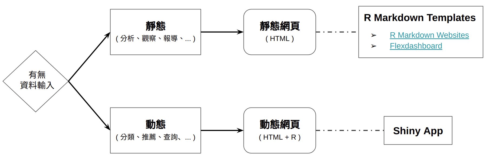

12 專案成果展示
在經過前面 11 堂課程的訓練，大家應當能獨立完成一些專案。但是在完成專案之後要能將其展示給其他人看才有意義。在這章裡面，將會介紹如何透過網頁這個媒介來分享我們的專案。
網頁可以簡單分成靜態網頁以及動態網頁。靜態網頁之所以稱為靜態是因為其內的內容並不需要即時改變，一個靜態網頁就是一個靜態的 HTML 檔所組成。當使用者瀏覽一個靜態網頁時，伺服器緊需要將這個 HTML 傳給使用者的電腦之後，就不需要再和使用者進行互動了。反之，動態網頁的特色是其在運作時，時常需要依據使用者的行為 (輸入資料、滑鼠點擊等) 而載入新的資料呈現在網頁上，或是將使用者端的資料傳送給伺服器。
依照專案的特性，我們可以選擇要以靜態網頁或是動態網頁去呈現專案：

這兩種類型的網頁都能透過 R 的套件實作：
- 靜態網頁可透過 R Markdown 相關套件製作，例如 R Markdown Websites、flexdashboard 以及 blogdown。
- 動態網頁可透過 Shiny 實作。RStudio 的 shinyapps.io 亦提供免費的 Shiny 佈署服務，讓使用者可以將寫好的 Shiny App 發布至此平台。
12.1 GitHub Pages
GitHub Pages 讓使用者能將 GitHub repository 轉換成靜態網頁 (完全免費)。因此，配合 R Markdown (輸出 HTML) 與 GitHub，我們就能很容易地將專案以靜態網頁的方式展示與分享給其它人。透過 GitHub Pages，我們也能架設個人網站，持續記錄自己參與過的專案，將各個專案累積成一個作品集。